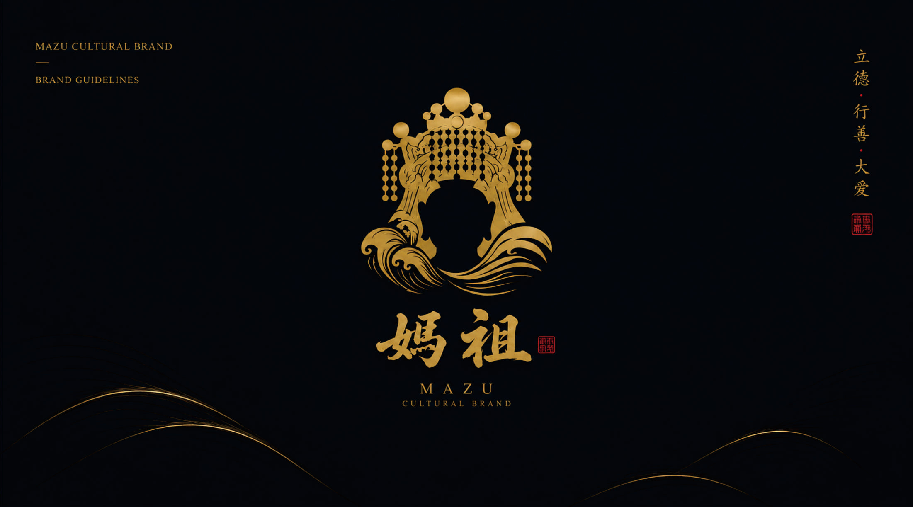

Project Overview
文化品牌的当代转译
核心目标是将传统信仰转译为当代青年可感知的“持续守护体验”。因此，品牌视觉策略围绕“不直接复刻传统神像形象”“以象征性女性守护者意象替代具象宗教表达”“将海洋文化符号转化为可组合视觉系统”等方向展开。
Brand Positioning面向年轻受众的文化品牌视觉系统设计，使传统文化进入社交传播、文创消费与城市文化空间。
Core Goal将“守护”从单一仪式行为转化为一种持续存在的心理安全感。
Key Metaphor光 = 指引与确定性；海 = 不确定的现实环境；风 = 外部变化；航行 = 个体成长路径。